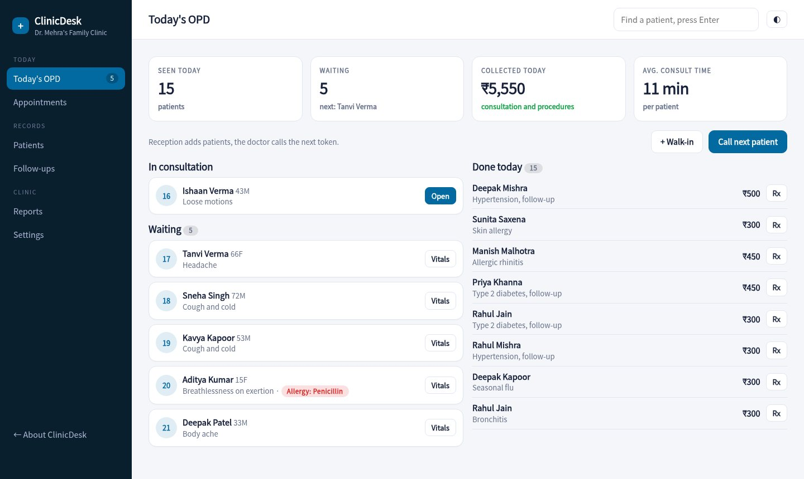
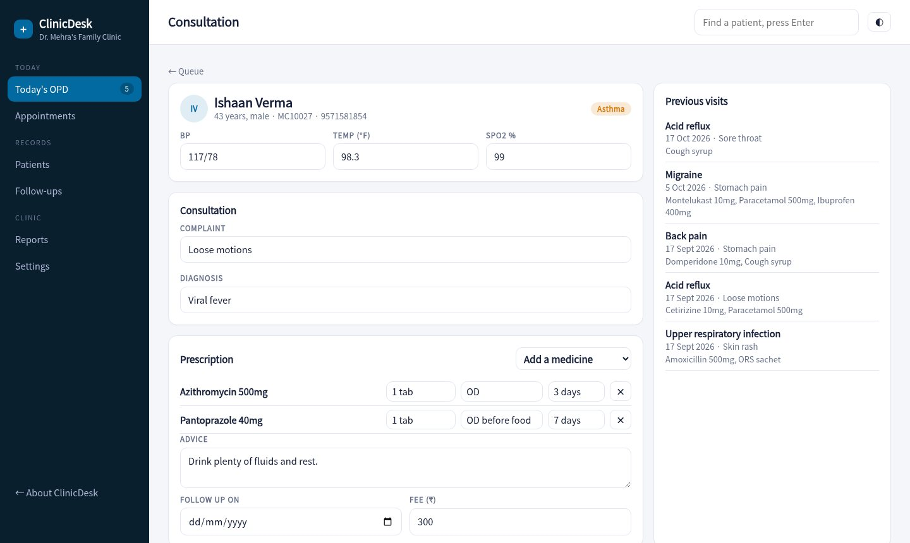
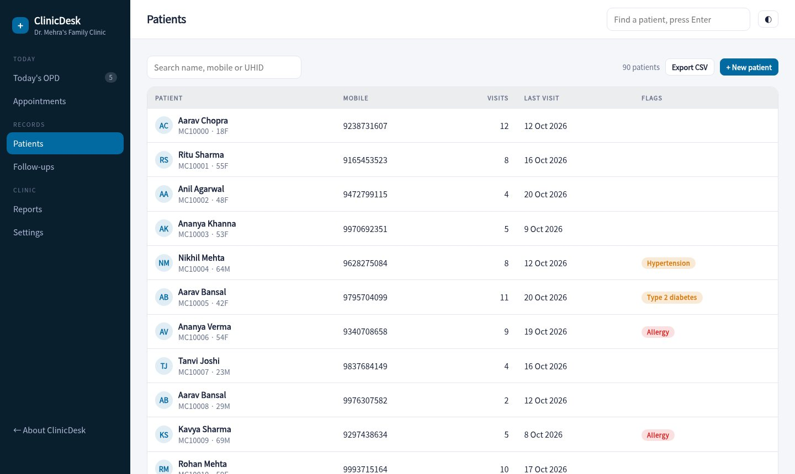

Reception issues tokens, the doctor opens the next patient with history and allergies in view, prints a clean prescription and bills in one flow. Follow-up reminders bring patients back.

Walk-ins and appointments join one queue. Reception records vitals while patients wait, and the doctor calls the next token.
Vitals, complaint, diagnosis, past visits and allergies sit together. Pick medicines from your formulary with dose, frequency and duration.
If a patient is allergic to penicillin and you add amoxicillin, the screen says so before the prescription is printed.
Name, registration number, timings and a clean medicine table. Print it or reprint an old one from the patient's history.
Collect the consultation fee by UPI, cash or card and show a QR for the exact amount. Mark pay later when needed.
Patients told to return in a week who have not come back are listed with a one-tap WhatsApp reminder.
Tokens, complaints and allergy flags on one screen, with today's count and collections above.
Past visits and medicines on the right, a prescription builder in the middle, and a warning if a drug clashes with a recorded allergy.

Every visit adds to the patient's history. Search by name, mobile or UHID and see diagnoses, medicines and flags.

Enter the doctor's details, registration number, timings, fee and UPI ID. The letterhead is ready.
Reception adds patients, the doctor consults, and billing closes each visit.
Check follow-ups each week and send reminders to anyone who has not returned.
Sample pricing for this concept build.
It prints a prescription on your letterhead with your registration number. Many doctors keep a pad for rare cases and use this for the rest.
In this demo, data stays in your browser. A production build would use encrypted storage with backups and role-based access.
Yes. The demo has a small formulary. A production build lets you manage your own list, with saved dose templates.
No. Patients and visits are generated for a made-up clinic.
Call the next patient, add a medicine, finish the visit and print the prescription.
Open the clinic app